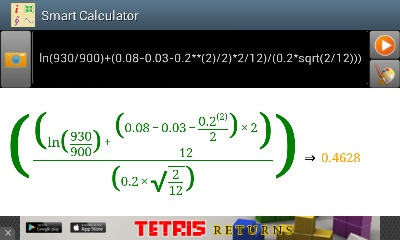

智慧計算器包括一項非常新穎的功能，就是拍照並識別打印體的數學表達式（也就是所謂的數學表達式OCR）。用戶可以通過安卓設備背部的攝像頭拍照，然後智慧計算器自動將照片轉換並進行識別計算。這項功能使用戶可以避免復雜表達式的輸入，也使計算變得更加直觀。
拍照識別步驟:
1. 啟動智慧計算器，點擊主窗口上位於輸入文本框左側的拍照按鈕；
2. 在智慧計算器顯示拍照預覽後，點擊預覽熒幕下方按鈕中的一個進行拍照識別。用戶可以調整綠色長方形的大小和位置以選定拍照識別的範圍。用戶需要註意兩點：第一用戶需盡可能避免拍攝出來的表達式位置不正（傾斜或者倒立）；第二，在綠色長方形的識別範圍內，背景的顏色必須比表達式的顏色要淺，比如，背景顏色為白色，而表達式為黑色，此外，背景必須盡可能的單調。光投影在背景上造成背景色深淺不一是可以接受的，但是，如果背景有很明顯的顏色區別，軟件會誤認為顏色的變化為表達式的筆畫，而造成識別錯誤；

3. 耐心等待智慧計算器對所拍得的照片預處理。識別成功後，軟體會自動退回智慧計算器主界面對識別出的表達式進行處理。如果用戶選擇的是繪圖，那麽一個2維，或者3維，或者極坐標圖會被繪制出。如果用戶選擇的是計算，則會給出計算結果。通常情況下，整個過程處理時間不會超過一分鐘。如果表達式很簡單（也就是不包括積分和其他復雜計算），但是花費的時間很長。這通常意味著識別有誤。在這種情況下，用戶可以點擊回退鍵取消正在進行的操作。如果識別已經完成，用戶可以修改識別後的表達式文本重新進行計算。如果識別還未完成，用戶可以重新拍照識別。如果所有的處理和計算都完成後用戶仍然對結果不滿意，可以發email給我們；

註意事項和要求:
1. 智慧計算器致力於識別印刷體表達式。顯然，印刷體表達式越清晰越好，識別激光打印表達式的效果肯定大大好於識別噴墨打印的效果。註意，現在我們的軟件還不支持手寫識別。
3. 當智慧計算器對白紙照相時，請確保背景光線不要太暗。否則，智慧計算器無法看清公式識別會失敗。用戶可以在預覽窗口下選中“開閃光燈”選擇框，將閃光燈打開。但要註意，如果閃光燈打開，白紙上的黑色墨水可能會反光造成筆畫不連續，影響識別效果。
4. 當智慧計算器對白紙照相時，請確保照相機離白紙10-30厘米遠（如果白紙是平放在桌子上）。如果太遠，照出來的字太小，看不清；如果太近，過強的手機的陰影會投射到紙上，造成背景光線過暗，也會嚴重影響識別效果。
5. 對電腦熒幕照相比對白紙照相更復雜。這是由於電腦熒幕並非是一個完整的平面，它是由像素點陣構成，而且熒幕也在很快地刷新，刷新的速率和拍照的曝光時間接近。這樣一來，用戶在處理過的圖像上會看到很多噪音點（實際上就是處理過的像素點），或者很多條紋（實際上就是拍攝下來的刷新線）。在這種情況下，用戶必須註意不要讓攝像頭離熒幕太近，並且如果一次識別不成功，可以多試幾次
對數學表達式的支持範圍:
1. 加減乘除；
2. 開任意次方；
3. 連加（Σ），連乘（Π）；
4. 不高於6次的多項式；
5. 線形多元一次方程組；
6. 基本的代數函數比如三角，對數等；
7. 復數；
8. 矩陣。